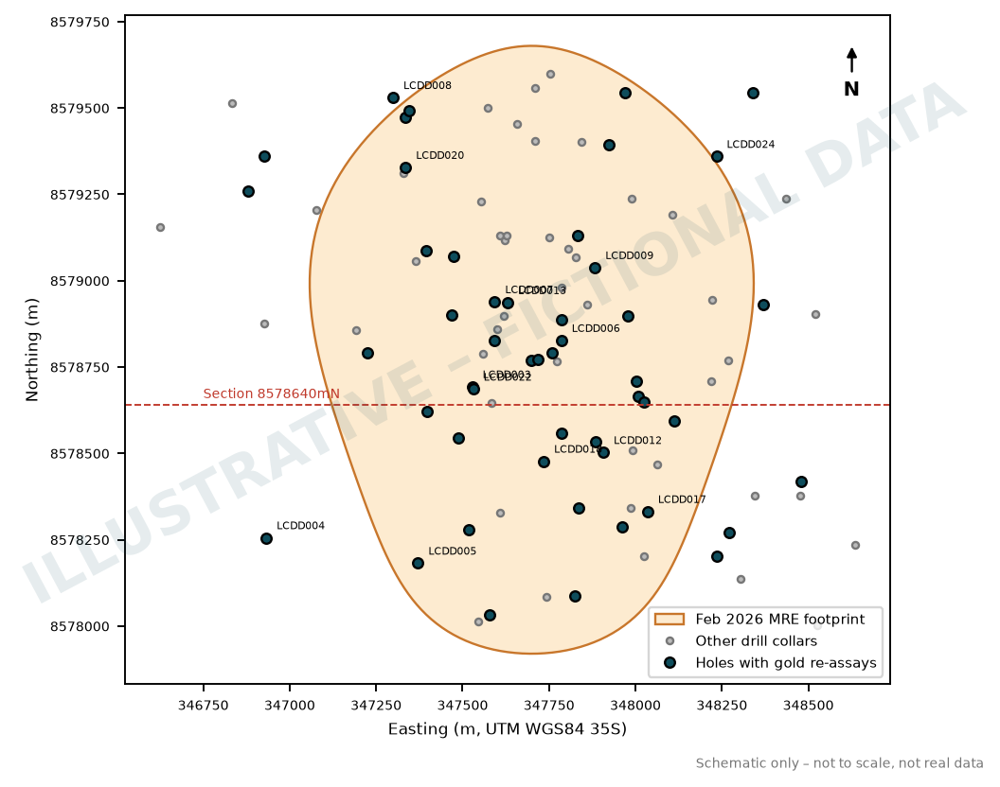
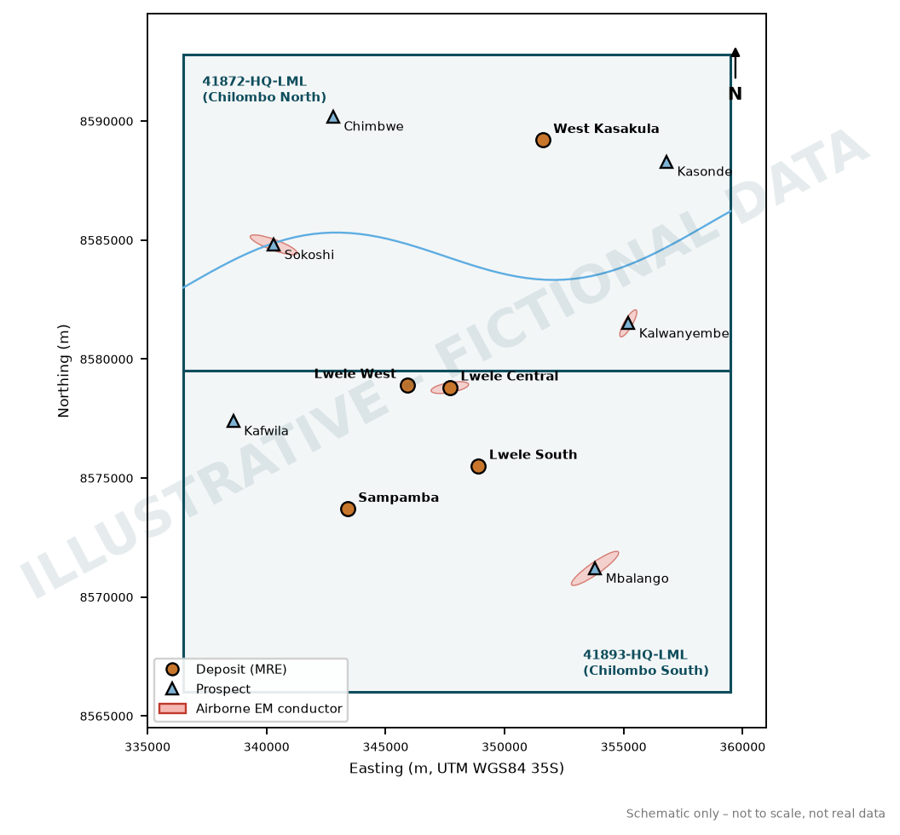
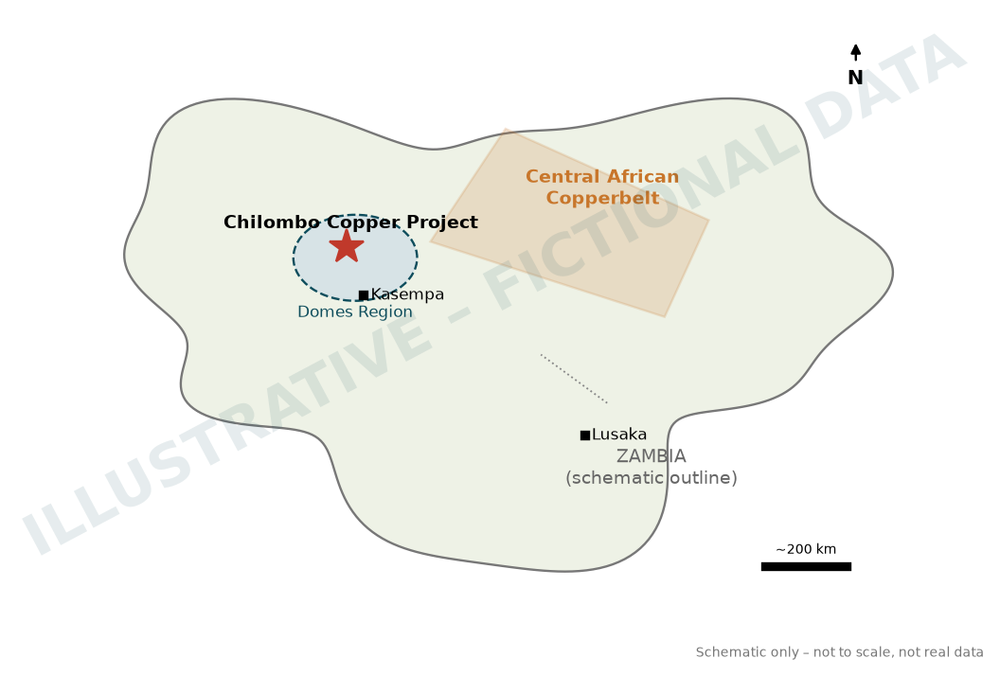

Halvorsen ResourcesLIMITED
ASX:HVR FRA:3HV
Halvorsen Resources Limited ACN 139 482 617 | Level 3, 16 Ord Street, West Perth WA 6005 | E: info@halvorsenresources.com.au W: halvorsenresources.com.au
ASX ANNOUNCEMENT
16 April 2026
Gold Assays Confirm By-Product Upside at Lwele Central
HIGHLIGHTS:
- Further re-assaying of Lwele Central drill holes has confirmed significant gold mineralisation, associated with the copper, throughout the deposit, now including the northern zones.
- Significant gold was intersected in 26 of the 30 holes for which new re-assay results have been received, with samples drawn from all of the major mineralised copper zones within the deposit.
- Notable new gold results (from within previously reported Cu intercepts) include:
- 26.6m @ 0.62g/t Au from 95.4m (LWDD062)
- 18.9m @ 0.18g/t Au from 52.3m (LCRD008)
- 14.3m @ 0.20g/t Au from 119m (LWDD056)
- 2.6m @ 0.76g/t Au from 156m (LWDD053)
- 10.2m @ 0.19g/t Au from 18.2m (LWDD054)
- 11.8m @ 0.09g/t Au from 202m (LWDD057)
- 7.8m @ 0.16g/t Au from 134m (LWDD052)
- Gold results for the 22 remaining re-assayed holes are expected later this month.
- These results add to the initial 28 re-assayed holes reported on 21 January 2026.
- The widespread gold, together with the in-situ cobalt, offers strong potential to improve Chilombo Copper Project economics through meaningful by-product credits.
- All new gold results will be incorporated into an update of the current Indicated and Inferred Mineral Resource Estimate (MRE) for Lwele Central, expected in Q2 2026.
Halvorsen Resources Limited (ASX:HVR) (Halvorsen or the Company) is pleased to report further gold re-assay results from the Lwele Central deposit, drawn from its Phase 1 and Phase 2 drill programmes and from historical drilling at the Chilombo Copper Project (87.5% Halvorsen) (Chilombo) in north-western Zambia.
Halvorsen’s Managing Director and CEO, Daniel Whitcombe, said:
“These results come out of the core re-logging and re-assaying work we have been running at Lwele Central through 2026. The aim was simple: to lift both the grade and the level of confidence in the gold component of the recently upgraded Chilombo MRE.
“What we are seeing is gold that is more extensive and more consistent than we had previously assumed. It runs right through the system, including the northern zones where historical data was thin. That strengthens an important value driver for the Project, because gold credits of this kind could push Chilombo’s forecast operating costs further down the global cost curve.
“The remaining re-assay batches are due over the next few weeks, and an updated Chilombo MRE will then capture this new understanding of the gold distribution at Lwele Central. At the same time, planning for the fully funded Phase 3 drilling programme is well advanced, with rigs due to mobilise in early May and a clear focus on regional growth.”
Widespread gold mineralisation confirmed at Lwele Central
After highly anomalous gold values were first identified during 2025 metallurgical test work, Halvorsen completed a first-pass assessment of gold distribution and grade as a potentially material by-product of the copper resources defined at the deposit, which included limited gold re-assaying of earlier Lwele Central drill holes1.
This led to an initial, and deliberately constrained, inclusion of gold in the February 2026 update of the Lwele Central Indicated and Inferred MRE, which totals 123.9 Mt @ 0.55% CuEq (at a 0.2% Cu cut-off grade)2 for 599,500 tonnes of copper, 25.0kt of cobalt and 115,000 ounces of gold.
To further test the gold distribution, and with the aim of building its scale, grade and confidence within the Lwele Central MRE footprint, Halvorsen selected a further ~2,200 existing samples from 52 previously completed Lwele Central drill holes (largely within the existing copper MRE wireframes) for gold assaying. Samples were taken from defined copper mineralisation in the oxide, transitional and fresh zones, as determined from geological logging.
New gold results have now been received for 30 of these re-assayed holes (see Figure 1), of which 26 contain significant gold. Notable intersections (from within previously reported copper intercepts) include:
- 26.6m @ 0.62g/t Au from 95.4m (LWDD062)
- 18.9m @ 0.18g/t Au from 52.3m (LCRD008)
- 14.3m @ 0.20g/t Au from 119m (LWDD056)
- 2.6m @ 0.76g/t Au from 156m (LWDD053)
- 10.2m @ 0.19g/t Au from 18.2m (LWDD054)
- 11.8m @ 0.09g/t Au from 202m (LWDD057)
- 7.8m @ 0.16g/t Au from 134m (LWDD052)
- 8.9m @ 0.11g/t Au from 187m (LWDD057)
Gold results for the remaining 22 re-assayed holes are expected later in April 2026.
All new gold assay data will then be incorporated into an update of the current Lwele Central MRE. A significant by-product gold endowment (together with cobalt) at the flagship Lwele Central deposit has the potential to materially improve the forecast economics of Chilombo, complementing the large-scale copper resources already defined there.
Collar locations and drill hole details for this release are tabulated in Appendix 1. The full set of significant gold intersections (and associated copper intersections) is tabulated in Appendix 2.

Illustrative figure – fictional data
Figure 1. Lwele Central drill hole collar plan showing the holes with gold re-assay results reported in this release and the areal extent of the current Mineral Resource Estimate (reported February 2026)
Ongoing metallurgical test work and Phase 3 drill programme
All copper and cobalt assays from the 2025 Phase 2 drilling programme have now been received.
A dedicated metallurgical drill hole (SPMT001) at the Sampamba deposit has been composite-sampled across its transitional and fresh mineralisation. The samples have been sent to Core Metallurgy in Brisbane (Australia) for comprehensive testing, with preliminary results expected in May 2026.
Separate gold and cobalt metallurgical composites have also been prepared from each of the oxide, transitional and fresh zones at Lwele Central for definitive metal recovery test work.
All outstanding assays from the licence-wide soil geochemical sampling programme completed in September 2025 have also been received. This data, together with historical and recently acquired geophysical data3, is feeding into planning for the Phase 3 exploration programme.
The Phase 3 2026 drill programme at Chilombo is scheduled to begin in early May, with a strong focus on regional growth targets.

Illustrative figure – fictional data
Figure 2. Chilombo Mining Licences showing the location of current prospects
This release was authorised by Daniel Whitcombe, Managing Director and CEO.
For further information, please contact:
Competent Person’s Statement
The information in this announcement that relates to Exploration Results is based on information compiled by Mr Graham Keeble, a Competent Person who is a member of The Australasian Institute of Mining and Metallurgy and The South African Institute of Mining and Metallurgy. Mr Keeble is the Company’s Chief Geologist. Mr Keeble has sufficient experience relevant to the style of mineralisation and type of deposit under consideration and to the activity he is undertaking to qualify as a Competent Person (CP) as defined in the 2012 Edition of the “Australasian Code for Reporting of Exploration Results, Mineral Resources and Ore Reserves”. Mr Keeble consents to the inclusion in the report of the matters based on his information in the form and context in which it appears.
The information in this report that relates to the Chilombo Project Mineral Resources and Exploration Targets is based on information compiled by Mr Michael Treloar, a Competent Person who is a Fellow of The Australasian Institute of Mining and Metallurgy (FAusIMM (CPGeo)). Mr Treloar is a full-time consultant with Treloar Resource Geology. Mr Treloar has sufficient experience that is relevant to the style of mineralisation and type of deposit under consideration and to the activity being undertaken to qualify as a Competent Person as defined in the 2012 Edition of the ‘Australasian Code for Reporting of Exploration Results, Mineral Resources and Ore Reserves’. Mr Treloar consents to the inclusion in the report of the matters based on his information in the form and context in which it appears.
Halvorsen confirms it is not aware of any new information or data that materially affects the information included in the original market announcements. Halvorsen confirms the form and context in which the Competent Person’s findings are presented have not been materially modified from the original market announcements.
Caution Regarding Forward-Looking Information
This announcement may contain some references to forecasts, estimates, assumptions, and other forward-looking statements. Although the Company believes that its expectations, estimates and forecast outcomes are based on reasonable assumptions, it can give no assurance that they will be achieved. They may be affected by a variety of variables and changes in underlying assumptions that are subject to risk factors associated with the nature of the business, which could cause actual results to differ materially from those expressed herein. All references to dollars ($) and cents in this announcement are in Australian currency, unless otherwise stated. Investors should make and rely upon their own enquiries before deciding to acquire or deal in the Company’s securities.
About Halvorsen Resources Limited (ASX: HVR, FRA: 3HV)
Halvorsen Resources Limited (ASX: HVR, FRA: 3HV) is an ASX-listed company focused on the exploration and development of electrification and battery metals projects in the broader sub-Saharan African region.
About the Chilombo Copper Project
The Chilombo Copper Project (87.5% Halvorsen) (Chilombo) lies in the world-class Central African Copperbelt of north-western Zambia. Held under two granted Large Scale Mining Licences (41872-HQ-LML; 41893-HQ-LML), Chilombo covers approximately 329 square kilometres of highly prospective tenure close to several major mines hosted in similar geological settings.
Halvorsen’s Phase 1 drilling in 2024 confirmed the growth potential of the significant copper mineralisation at Lwele Central and provided confidence in a potential future large-scale open-pit mining development at Chilombo. Extensive Phase 2 drilling followed during 2025. In February 2026, Halvorsen delivered an updated Indicated and Inferred Mineral Resource Estimate for Chilombo of 143Mt @ 0.49% Cu (0.54% CuEq) for 696kt of contained copper.
Phase 3 drilling is expected to commence in early May 2026.

Illustrative figure – fictional data
Location of the Chilombo Copper Project in north-western Zambia
About Copper
Copper is a soft, ductile metal with a distinctive reddish hue and one of the highest electrical and thermal conductivities of any element. Used by people for more than ten millennia, it is today consumed predominantly in power generation and transmission, building wiring, electronics and industrial machinery. Demand is expected to grow strongly through the energy transition: electric vehicles typically contain three to four times more copper than conventional vehicles, and renewable generation, grid expansion and data centres are all copper-intensive. Copper is also widely alloyed to produce brass and bronze for plumbing, coinage and architectural uses.
APPENDIX 1: Drill collar locations and details for Lwele Central gold re-assay drill holes (Datum is UTM_WGS84_35S)
| Hole_ID | Drill Type | Deposit | DH_East | DH_North | DH_RL | Datum | DH_Dip | DH_Azimuth | DH_Depth |
|---|
| HX23_3 | DD | Lwele Central | 347731 | 8578560 | 1216 | UTM_WGS84_35S | -70 | 270 | 347.14 |
| HX23_4 | DD | Lwele Central | 347826 | 8578411 | 1213 | UTM_WGS84_35S | -70 | 90 | 274.21 |
| LCDD003 | DD | Lwele Central | 347698 | 8578757 | 1220 | UTM_WGS84_35S | -70 | 90 | 265.72 |
| LCDD004 | DD | Lwele Central | 347594 | 8579053 | 1226 | UTM_WGS84_35S | -70 | 90 | 460.21 |
| LCDD015 | DD | Lwele Central | 347650 | 8578415 | 1215 | UTM_WGS84_35S | -70 | 90 | 241.41 |
| LCDD022 | DD | Lwele Central | 347575 | 8578510 | 1214 | UTM_WGS84_35S | -70 | 90 | 243.20 |
| LCRD004R | RCD | Lwele Central | 347610 | 8578857 | 1223 | UTM_WGS84_35S | -70 | 90 | 408.08 |
| LCRD005 | RCD | Lwele Central | 347773 | 8579162 | 1223 | UTM_WGS84_35S | -70 | 90 | 454.72 |
| LCRD006 | RCD | Lwele Central | 347871 | 8578758 | 1215 | UTM_WGS84_35S | -70 | 90 | 94.32 |
| LCRD007 | RCD | Lwele Central | 347699 | 8578857 | 1221 | UTM_WGS84_35S | -70 | 90 | 352.10 |
| LCRD008 | RCD | Lwele Central | 347869 | 8578709 | 1215 | UTM_WGS84_35S | -70 | 90 | 203.52 |
| LCRD010 | RCD | Lwele Central | 347650 | 8578806 | 1222 | UTM_WGS84_35S | -70 | 90 | 517.50 |
| LCRD012 | RCD | Lwele Central | 347901 | 8578906 | 1216 | UTM_WGS84_35S | -70 | 90 | 345.42 |
| LCRD016 | RCD | Lwele Central | 347749 | 8578254 | 1213 | UTM_WGS84_35S | -70 | 90 | 75.52 |
| LCRD018 | RCD | Lwele Central | 347853 | 8578256 | 1211 | UTM_WGS84_35S | -70 | 90 | 75.09 |
| LCRD021 | RCD | Lwele Central | 347891 | 8578609 | 1214 | UTM_WGS84_35S | -70 | 90 | 82.47 |
| LCRD025 | RCD | Lwele Central | 347850 | 8578937 | 1218 | UTM_WGS84_35S | -70 | 90 | 99.19 |
| LCRD026 | RCD | Lwele Central | 347467 | 8579105 | 1230 | UTM_WGS84_35S | -70 | 90 | 694.58 |
| LCRD027 | RCD | Lwele Central | 347647 | 8578710 | 1220 | UTM_WGS84_35S | -70 | 90 | 111.50 |
| LWDD052 | DD | Lwele Central | 347810 | 8578802 | 1218 | UTM_WGS84_35S | -70 | 90 | 209.76 |
| LWDD053 | DD | Lwele Central | 347814 | 8578747 | 1217 | UTM_WGS84_35S | -70 | 90 | 299.84 |
| LWDD054 | DD | Lwele Central | 347796 | 8578852 | 1219 | UTM_WGS84_35S | -65 | 90 | 339.20 |
| LWDD055 | DD | Lwele Central | 347800 | 8578900 | 1219 | UTM_WGS84_35S | -65 | 90 | 349.21 |
| LWDD056 | DD | Lwele Central | 347798 | 8578953 | 1219 | UTM_WGS84_35S | -65 | 90 | 364.24 |
| LWDD057 | DD | Lwele Central | 347730 | 8579054 | 1223 | UTM_WGS84_35S | -65 | 90 | 446.92 |
| LWDD058 | DD | Lwele Central | 347719 | 8578631 | 1217 | UTM_WGS84_35S | -70 | 90 | 243.40 |
| LWDD059 | DD | Lwele Central | 347773 | 8578631 | 1216 | UTM_WGS84_35S | -70 | 90 | 210.24 |
| LWDD060 | DD | Lwele Central | 347801 | 8578315 | 1213 | UTM_WGS84_35S | -60 | 90 | 258.02 |
| LWDD061 | DD | Lwele Central | 347696 | 8578561 | 1217 | UTM_WGS84_35S | -65 | 90 | 259.93 |
| LWDD062 | DD | Lwele Central | 347672 | 8579001 | 1223 | UTM_WGS84_35S | -60 | 90 | 490.12 |
APPENDIX 2: Significant drill hole intersections for gold (g/t) and associated copper intersections (Cu%)
| Hole ID | Deposit | From (m) | To (m) | Width (m) | Au (g/t) | Cu% |
|---|
| HX23_4 | Lwele Central | 10.97 | 12.80 | 1.83 | 0.05 | NA* |
| | 15.54 | 23.31 | 7.77 | 0.06 | NA* |
| LCDD003 | Lwele Central | 39.48 | 42.23 | 2.75 | 0.14 | 1.18 |
| LCDD004 | Lwele Central | 145.19 | 147.74 | 2.55 | 0.41 | 0.86 |
| LCDD015 | Lwele Central | 0.96 | 7.06 | 6.10 | 0.06 | NA* |
| LCDD022 | Lwele Central | 166.26 | 168.03 | 1.77 | 0.09 | 0.07 |
| | 181.30 | 185.42 | 4.12 | 0.07 | 0.12 |
| | 210.48 | 213.13 | 2.65 | 0.09 | 0.18 |
| LCRD004R | Lwele Central | 391.04 | 394.94 | 3.90 | 0.05 | 0.99 |
| LCRD005 | Lwele Central | 187.10 | 189.37 | 2.27 | 0.12 | 0.72 |
| LCRD006 | Lwele Central | 83.00 | 85.83 | 2.83 | 0.16 | 0.92 |
| LCRD007 | Lwele Central | 76.70 | 79.49 | 2.79 | 0.12 | 1.12 |
| | 104.10 | 106.84 | 2.74 | 0.14 | 0.83 |
| | 175.32 | 177.12 | 1.80 | 0.14 | 0.85 |
| LCRD008 | Lwele Central | 52.27 | 71.18 | 18.91 | 0.18 | 0.41 |
| LCRD010 | Lwele Central | 31.04 | 33.34 | 2.30 | 0.08 | 0.18 |
| LCRD012 | Lwele Central | 41.23 | 43.46 | 2.23 | 0.16 | 0.24 |
| LCRD018 | Lwele Central | 26.88 | 31.51 | 4.63 | 0.11 | 0.67 |
| LCRD021 | Lwele Central | 26.47 | 28.51 | 2.04 | 0.16 | 0.10 |
| | 72.29 | 75.34 | 3.05 | 0.09 | 0.27 |
| LCRD026 | Lwele Central | 577.11 | 579.15 | 2.04 | 0.21 | 0.57 |
| LWDD052 | Lwele Central | 106.82 | 111.68 | 4.86 | 0.08 | 0.64 |
| | 120.42 | 126.39 | 5.97 | 0.12 | 0.88 |
| | 134.01 | 141.78 | 7.77 | 0.16 | 0.21 |
| | 161.20 | 163.14 | 1.94 | 0.15 | 1.24 |
| LWDD053 | Lwele Central | 102.38 | 104.68 | 2.30 | 0.10 | 0.44 |
| | 122.70 | 124.32 | 1.62 | 0.52 | 10.77 |
| | 155.14 | 157.75 | 2.61 | 0.76 | 1.21 |
| | 160.89 | 162.98 | 2.09 | 0.10 | 0.33 |
| LWDD054 | Lwele Central | 18.15 | 28.36 | 10.21 | 0.19 | 0.52 |
| | 41.97 | 44.24 | 2.27 | 0.09 | 1.44 |
| | 47.65 | 52.19 | 4.54 | 0.14 | 1.44 |
| | 122.52 | 124.79 | 2.27 | 0.14 | 0.37 |
| | 129.33 | 137.27 | 7.94 | 0.14 | 0.76 |
| | 140.67 | 142.94 | 2.27 | 0.18 | 0.07 |
| | 148.61 | 151.45 | 2.84 | 0.10 | 0.23 |
| LWDD055 | Lwele Central | 23.89 | 27.57 | 3.68 | 0.08 | 0.38 |
| | 32.16 | 34.00 | 1.84 | 0.08 | 0.77 |
| | 66.17 | 68.93 | 2.76 | 0.17 | 0.55 |
| | 114.87 | 117.63 | 2.76 | 0.10 | 0.86 |
| | 126.82 | 132.33 | 5.51 | 0.09 | 0.13 |
| LWDD056 | Lwele Central | 118.88 | 133.15 | 14.27 | 0.20 | 1.01 |
| | 174.99 | 181.65 | 6.66 | 0.10 | 0.44 |
| LWDD057 | Lwele Central | 64.66 | 66.89 | 2.23 | 0.08 | 0.65 |
| | 76.92 | 80.26 | 3.34 | 0.10 | 0.46 |
| | 84.72 | 93.64 | 8.92 | 0.07 | 0.55 |
| | 112.59 | 115.93 | 3.34 | 0.07 | 0.71 |
| | 119.28 | 123.74 | 4.46 | 0.06 | 0.39 |
| | 125.97 | 133.77 | 7.80 | 0.08 | 0.41 |
| | 136.00 | 140.46 | 4.46 | 0.16 | 1.09 |
| | 143.81 | 147.15 | 3.34 | 0.14 | 0.34 |
| | 187.29 | 196.21 | 8.92 | 0.11 | 0.74 |
| | 202.27 | 214.04 | 11.77 | 0.09 | 0.91 |
| LWDD058 | Lwele Central | 44.26 | 50.58 | 6.32 | 0.07 | 0.44 |
| | 63.22 | 68.49 | 5.27 | 0.10 | 1.22 |
| | 90.62 | 93.78 | 3.16 | 0.08 | 0.87 |
| | 122.23 | 124.34 | 2.11 | 0.09 | 1.90 |
| | 170.70 | 173.86 | 3.16 | 0.20 | 1.11 |
| LWDD059 | Lwele Central | 46.57 | 50.97 | 4.40 | 0.08 | 0.37 |
| | 56.43 | 58.79 | 2.36 | 0.06 | 0.25 |
| | 61.16 | 62.97 | 1.81 | 0.17 | 0.39 |
| | 133.79 | 135.91 | 2.12 | 0.06 | 2.11 |
| LWDD060 | Lwele Central | 37.49 | 39.70 | 2.21 | 0.15 | 0.36 |
| | 87.11 | 89.32 | 2.21 | 0.07 | 0.17 |
| LWDD061 | Lwele Central | 180.43 | 182.17 | 1.74 | 0.06 | 1.03 |
| LWDD062 | Lwele Central | 46.02 | 54.07 | 8.05 | 0.10 | 0.19 |
| | 95.38 | 121.96 | 26.58 | 0.62 | 0.49 |
* NA – Not Assayed. Significant intersections reported at a 0.05g/t Au threshold. No significant gold intersections were returned from holes HX23_3, LCRD016, LCRD025 and LCRD027.
JORC Code, 2012 Edition – Table 1
Section 1 Sampling Techniques and Data
(Criteria in this section apply to all succeeding sections.)
| Criteria | JORC Code explanation | Commentary |
|---|
| Sampling techniques | - Nature and quality of sampling (eg cut channels, random chips, or specific specialised industry standard measurement tools appropriate to the minerals under investigation, such as down hole gamma sondes, or handheld XRF instruments, etc). These examples should not be taken as limiting the broad meaning of sampling.
- Include reference to measures taken to ensure sample representivity and the appropriate calibration of any measurement tools or systems used.
- Aspects of the determination of mineralisation that are Material to the Public Report.
- In cases where ‘industry standard’ work has been done this would be relatively simple (eg ‘reverse circulation drilling was used to obtain 1 m samples from which 3 kg was pulverised to produce a 30 g charge for fire assay’). In other cases, more explanation may be required, such as where there is coarse gold that has inherent sampling problems. Unusual commodities or mineralisation types (eg submarine nodules) may warrant disclosure of detailed information.
| - Halvorsen Resources’ Phase 1 and Phase 2 drilling programmes at Lwele Central were designed to test and verify parts of the geological model and the existing Indicated and Inferred Mineral Resource estimates.
- Drill holes were designed to sample across the copper (and associated gold/cobalt) mineralisation as close to perpendicular as possible.
- Samples were collected either on 1m intervals or broken at defined lithological boundaries.
- Diamond drilling (DD) was completed using two track-mounted LF90 rigs. Core size was PQ initially, through the transitional zone (normally to 55–75m depth), and NQ core thereafter.
- For the Phase 1 RC pre-collars, a standalone truck-mounted RC rig operated by Mwila Contracting, with a 4.5” bit diameter, drilled holes through the oxide zone.
- RC chip samples were collected in plastic bags on a one metre basis, weighed, checked for moisture and split using a multi-layered riffle, with a reference sample retained and a sample set aside for dispatch to the certified laboratory, ALS Ndola.
- Handheld XRF readings were taken on RC samples using a Vanta C analyser, with composite sampling of non-mineralised material (cut-off grade <0.1% Cu) and single metre sampling of mineralised material (cut-off grade >0.1% Cu). Composite and single metre samples were then dispatched to the certified laboratory as required.
- Half drill core was initially sampled based on observed copper mineralisation, over intervals of one metre or less determined by geological contacts within mineralised units.
- Drill core was cut at a consistent distance relative to the solid orientation line or dashed mark-up line.
- RC and diamond core samples were dispatched in batches to ALS Ndola or Intertek Kitwe for preparation and blind standard insertion. Samples were dried, crushed to 85% passing -5mm, split to 1.2kg and pulverised to 85% passing -75µm.
- The pulps were then collected by courier and delivered to SGS Kalulushi for gold analysis.
- AAS42S analysis comprised a standard 4-acid digest (HNO3/HClO4/HCl/HF) of a 0.4g pulp at 200ºC for 45 minutes, with an AAS finish on the bulked-up solution to produce Total Cu and Co analyses.
- AAS72C “single acid” (5% H2SO4 + Na2SO3) cold leach of a 0.5g pulp, followed by AAS, gives Acid Soluble Cu and Co.
- Mixed DD and RC samples were analysed for Au at SGS in batches of approximately 200 per job dispatch.
|
| Drilling techniques | - Drill type (eg core, reverse circulation, open-hole hammer, rotary air blast, auger, Bangka, sonic, etc) and details (eg core diameter, triple or standard tube, depth of diamond tails, face-sampling bit or other type, whether core is oriented and if so, by what method, etc).
| - Core orientation was determined using an Axis Champ Ori orientation instrument. Downhole surveying was by an Axis ChampNavigator north-seeking continuous gyro.
- Phase 1 RC drilling was conducted by Mwila Contracting using a face-sampling bit, completing 25 pre-collars. Diamond drilling in Phases 1 and 2 was conducted by Kafue Drilling Services. Downhole surveying of historical holes was by TruShot tool.
|
| Drill sample recovery | - Method of recording and assessing core and chip sample recoveries and results assessed.
- Measures taken to maximise sample recovery and ensure representative nature of the samples.
- Whether a relationship exists between sample recovery and grade and whether sample bias may have occurred due to preferential loss/gain of fine/coarse material.
| - Initial geotechnical logging recorded core recoveries and RQD, with recoveries exceeding 95%.
- For RC chips, samples were weighed and weights recorded to estimate recovery.
- No relationship between core loss and grade has been observed.
|
| Logging | - Whether core and chip samples have been geologically and geotechnically logged to a level of detail to support appropriate Mineral Resource estimation, mining studies and metallurgical studies.
- Whether logging is qualitative or quantitative in nature. Core (or costean, channel, etc) photography.
- The total length and percentage of the relevant intersections logged.
| - At Chilombo, logging of drill core and RC chips records: from–to depths, colour and hue, stratigraphy, weathering, texture, structure and structural orientation; type, mode and intensity of alteration and ore minerals; zone type for mineralised rock (oxide, transitional, sulphide); geological notes and a % estimate of ore minerals present.
- RC chips were logged metre by metre. For diamond core, unit boundaries were based on contrasting lithologies, the presence or absence of mineralisation, sudden changes in weathering (usually associated with structures), and changes in major rock-forming or alteration minerals such as large garnets. A core logging guide was prepared to ensure uniform interpretation and consistent data entry.
- 100% of all drilling was geologically logged using standard Halvorsen Resources codes.
- All core and RC chip trays were photographed wet and dry, with photographs digitally named and organised for archiving and back-up.
|
| Sub-sampling techniques and sample preparation | - If core, whether cut or sawn and whether quarter, half or all core taken.
- If non-core, whether riffled, tube sampled, rotary split, etc and whether sampled wet or dry.
- For all sample types, the nature, quality, and appropriateness of the sample preparation technique.
- Quality control procedures adopted for all sub-sampling stages to maximise representivity of samples.
- Measures taken to ensure that the sampling is representative of the in situ material collected, including for instance results for field duplicate/second-half sampling.
- Whether sample sizes are appropriate to the grain size of the material being sampled.
| - At Chilombo, all core was cut with a core saw. Half core was sampled in mineralised units and quarter core in non-mineralised units.
- RC samples were checked for moisture. Wet or damp samples were left to dry for several days before being split with a multi-layered riffle.
- High quality sampling procedures and appropriate sample preparation techniques were followed.
- Commercial certified reference materials (CRMs) were inserted at intervals of 1 in 20 in rotation, each immediately followed by a blank. In total, 47 blanks, 128 Au CRMs and 88 laboratory duplicates were inserted.
- Sample size (approximately 2kg) is considered appropriate to the grain size of the material being sampled.
|
| Quality of assay data and laboratory tests | - The nature, quality and appropriateness of the assaying and laboratory procedures used and whether the technique is considered partial or total.
- For geophysical tools, spectrometers, handheld XRF instruments, etc, the parameters used in determining the analysis including instrument make and model, reading times, calibrations factors applied and their derivation, etc.
- Nature of quality control procedures adopted (eg standards, blanks, duplicates, external laboratory checks) and whether acceptable levels of accuracy (ie lack of bias) and precision have been established.
| - For Chilombo Project drilling, certified laboratories (SGS, Intertek and ALS) were used. The AAS techniques are considered appropriate for the type of mineralisation.
- 128 Au certified standards (CRMs) produced by AMIS of Johannesburg were inserted at intervals of 1 in 20 in rotation, each immediately followed by a blank. QA/QC was monitored on each batch, with re-analysis where errors exceeded set limits. The CRMs used were AMIS 0881 (5.25g/t Au), AMIS 0923 (1.22g/t Au), AMIS 0622 (0.014g/t Au), AMIS 0623 (0.014g/t Au), AMIS 0695 (0.093g/t Au), AMIS 0696 (0.556g/t Au), AMIS 0795 (0.046g/t Au), AMIS 0844 (0.004g/t Au) and AMIS 0845 (0.016g/t Au).
- For the latest gold re-assaying of Phase 1 and Phase 2 samples, all blanks returned satisfactorily low results and all CRM types fell within two standard deviations of their certified values. The correlation on the 36 fine laboratory duplicates is a creditable 81%. Three results fell outside acceptable limits and have been flagged for “blind” re-assay; all are low-grade (<0.14g/t Au) samples.
- In conclusion, the sample preparation procedures at ALS and Intertek, and the accuracy and precision of SGS Kalulushi, are adequate for purpose.
|
| Verification of sampling and assaying | - The verification of significant intersections by either independent or alternative company personnel.
- The use of twinned holes.
- Documentation of primary data, data entry procedures, data verification, data storage (physical and electronic) protocols.
- Discuss any adjustment to assay data.
| - At Chilombo, all significant intersections and most drill core were inspected by several geologists, including Halvorsen’s Chief Geologist and Competent Person.
- All core from the previous explorer’s 2011, 2014 and 2021 diamond drilling is stored with a Kitwe-based geological consultancy.
- All data has been transferred to an Access database and migrated to GeoSpark.
- No adjustments were made to any current or historical data. Data that could not be validated to a reasonable level of certainty was not used in any resource estimation.
|
| Location of data points | - Accuracy and quality of surveys used to locate drill holes (collar and down-hole surveys), trenches, mine workings and other locations used in Mineral Resource estimation.
- Specification of the grid system used.
- Quality and adequacy of topographic control.
| - 55 historical drill collars were located and surveyed by DGPS by an independent survey contractor; only seven historical holes could not be located. Holes from the Phase 2 programme were initially located by handheld GPS and, on completion of the programme, surveyed by DGPS. The coordinate system used is WGS84 UTM Zone 35S.
|
| Data spacing and distribution | - Data spacing for reporting of Exploration Results.
- Whether the data spacing and distribution is sufficient to establish the degree of geological and grade continuity appropriate for the Mineral Resource and Ore Reserve estimation procedure(s) and classifications applied.
- Whether sample compositing has been applied.
| - At Lwele Central the original data spacing was generally 180 metre traverses with 150 metre hole spacing, with some traverses at 75 metre hole spacing.
- Additional drilling to a nominal 90 metre traverse by 75 metre hole spacing has been assessed geostatistically as sufficient to establish geological and grade continuity.
- Lwele Central drill hole spacing now generally ranges from 35–110m, widening to 60–110m in the more distal parts of the defined copper mineralisation, to improve confidence in geological and grade continuity.
- Samples from within the mineralised wireframes were used for a sample length analysis; most samples were 1m long. Conventional mining software was used to extract fixed-length 1m downhole composites within intervals coded as mineralised intersections.
- Current drill spacing and density at Lwele Central is considered sufficient for reporting under JORC (2012).
- Halvorsen Resources’ Phase 1 and Phase 2 drilling programmes focused on expanding the existing Mineral Resource footprint of Lwele Central to the north, south and west.
|
| Orientation of data in relation to geological structure | - Whether the orientation of sampling achieves unbiased sampling of possible structures and the extent to which this is known, considering the deposit type.
- If the relationship between the drilling orientation and the orientation of key mineralised structures is considered to have introduced a sampling bias, this should be assessed and reported if material.
| - At Lwele Central, drill holes were oriented to intersect the mineralisation normal to strike and were inclined at -70° towards 090°. Mineralisation is interpreted to strike 010° true, dip moderately to steeply west (folded) and plunge moderately to the north-northeast.
- Because of the dip of the mineralisation, holes inclined at 70° do not intersect it exactly perpendicular. This is not considered to have introduced any significant bias.
- Geological mapping at prospect scale was used to refine the local structural fabric so that holes could be drilled perpendicular to the interpreted strike of the deposit.
|
| Sample security | - The measures taken to ensure sample security.
| - All Chilombo Project RC samples and drill core generated by the Company are stored on site; historical drill samples are held in secure sheds in Kitwe at a geological contractor’s facility.
- Samples were collected and bagged on site under the supervision of the geologist, then transported directly to the assay laboratory in sample cages, where they were received into the laboratory’s secure storage compound before processing.
|
| Audits or reviews | - The results of any audits or reviews of sampling techniques and data.
| - Independent reviews were carried out by an international consultancy in 2024 and again in January 2026. The resulting recommendations have largely been adopted, and no material issues with sampling were identified.
- In addition, a specialist Copperbelt structural geology consultancy undertook detailed structural investigations of the Lwele Central drill core in February 2025 and December 2025.
- The Company’s Competent Person for Mineral Resources and Exploration Targets, Mr Michael Treloar (Treloar Resource Geology), visited site in June 2025 to review QAQC, site, software, data storage and laboratory protocols used by Halvorsen at Chilombo.
- Geologists from the Company’s strategic partners, major operators in the region with a strong presence in the north-western Zambian Copperbelt, including at tier-1 Domes Region operations to the northwest and northeast of Chilombo, have also made numerous site visits.
|
Section 2 Reporting of Exploration Results
(Criteria listed in the preceding section also apply to this section.)
| Criteria | JORC Code explanation | Commentary |
|---|
| Mineral tenement and land tenure status | - Type, reference name/number, location and ownership including agreements or material issues with third parties such as joint ventures, partnerships, overriding royalties, native title interests, historical sites, wilderness or national park and environmental settings.
- The security of the tenure held at the time of reporting along with any known impediments to obtaining a licence to operate in the area.
| - The original Large Scale Prospecting Licence for Chilombo, 17384-HQ-LPL, is located approximately 70km north-northwest of the town of Kasempa, in Kasempa District, North-Western Province, Zambia. The licence was due to expire on 14/08/2018 and was renewed as Large Scale Exploration Licence 23516-HQ-LEL on 11/01/2018, due to expire on 10/01/2022.
- That tenement was revoked, and a similar ground position was subsequently covered by 31275-HQ-LEL, granted for four years to Zambezi Minerals Development Limited (ZMD) on 17/01/2022 and expiring on 16/01/2026.
- ZMD held 100% of 31275-HQ-LEL (now approximately 329 km²). The licence excludes the northeast portion of the former licence, which covered two historical prospects.
- Following execution of the transaction agreement on 5 June 2024, HVR acquired 80% of the project from ZMD, with the licence then held in the name of Nkwazi Minerals Limited (80% HVR, 20% ZMD).
- This interest was subsequently increased to 87.5% HVR (12.5% ZMD) in March 2026.
- On 17 February 2025, two Large Scale Mining Licences were granted (for 25 years) in the name of Nkwazi Minerals. These are 41893-HQ-LML, covering 176 km² in the southern portion of the original licence including Lwele Central, and 41872-HQ-LML, covering 152 km² in the northern portion including West Kasakula and Sampamba.
- The licences are in good standing.
|
| Exploration done by other parties | - Acknowledgment and appraisal of exploration by other parties.
| - A state-era Copperbelt mining company (1960s–1970s) completed regional soil sampling, augering, wagon drilling and diamond drilling, including drilling at Lwele Central (drill holes CL295 and CL296).
- A European uranium joint venture (1982–1987) completed systematic regional radiometric traversing, soil and stream sediment sampling, geological mapping, pitting and trenching, largely targeting uranium. No drilling was completed.
- A major-company joint venture in the 1990s completed soil sampling and diamond drilling at Lwele Central (drill holes LWU1 and LWU2).
- A major-company subsidiary (2000–2003) completed regional and infill soil sampling, geological mapping and IP/CR/CSAMT geophysical surveys, together with three phases of RC drilling: two programmes at Chilombo (CLB00RC001–011 and CLB01RC001–009) and one regional programme (CLB02RC001–007; 012).
- A subsequent joint venture (2003–2008): work undocumented, although some drill collars located are presumed to date from this period.
- A previous explorer (ASX-listed) (2011–2021) completed various phases of intermittent RC and diamond drilling, partly in joint venture with a major international copper producer, at Lwele, Sampamba and a northern prospect.
- Between 2012 and 2021 the previous explorer, alone and under the joint venture, also completed drilling and exploration (including geophysics and surface geochemical sampling) at Lwele (Central, South, East and North), West Kasakula, Sampamba, Kalwanyembe, Musonda, Sokoshi and Chimbwe.
- As part of this work, a high-resolution aeromagnetic and radiometric survey was flown in 2012 and independently audited. This was accompanied by a detailed Landsat structural interpretation, and induced polarisation (IP) programmes were initiated with mixed results at Lwele Central and North.
|
| Geology | - Deposit type, geological setting, and style of mineralisation.
| - The targeted style of copper and cobalt mineralisation is Domes Region style: structurally controlled, shear-hosted Cu ± Co (± U and Au), developed within interleaved, deformed Lower Roan and basement schists and gneisses. The dominant structural trend at Lwele is north–south. Three phases of folding have been identified, with the F1 direction plunging NNW. The package appears to be hosted within a NNE–SSW trending thrust sheet. Southeast–northwest and, to a lesser extent, southwest–northeast cross-cutting structures have also affected the mineralised system.
- There appears to be a preferential supergene concentration of gold within the transitional and possibly oxide zones at the Chilombo Project, although this must be verified by subsequent fire assay re-analysis.
|
| Drill hole Information | - A summary of all information material to the understanding of the exploration results including a tabulation of the following information for all Material drill holes: easting and northing of the drill hole collar; elevation or RL (Reduced Level – elevation above sea level in metres) of the drill hole collar; dip and azimuth of the hole; down hole length and interception depth; hole length.
- If the exclusion of this information is justified on the basis that the information is not Material and this exclusion does not detract from the understanding of the report, the Competent Person should clearly explain why this is the case.
| |
| Data aggregation methods | - In reporting Exploration Results, weighting averaging techniques, maximum and/or minimum grade truncations (eg cutting of high grades) and cut-off grades are usually Material and should be stated.
- Where aggregate intercepts incorporate short lengths of high grade results and longer lengths of low grade results, the procedure used for such aggregation should be stated and some typical examples of such aggregations should be shown in detail.
- The assumptions used for any reporting of metal equivalent values should be clearly stated.
| - For the Chilombo Project, interpreted mineralisation envelopes were based on a nominal 0.2% Cu cut-off grade for low-grade material and 0.7% Cu for high-grade material, with a minimum downhole length of 2m.
- Statistical analysis of the assay values indicated a natural cut-off for low grade at 0.1–0.2% Cu and between 0.6% and 0.8% Cu for high grade.
- No top-cut was applied to Cu in oxide material; top-cuts of 2.0% Cu and 5.5% Cu were applied to transitional and fresh (sulphide) material respectively.
- No top-cut was applied to Co in oxide/transitional material; a 0.40% Co top-cut was applied to fresh (sulphide) material.
- For gold, no top-cut was applied to oxide/transitional material; a 0.7ppm top-cut was applied to fresh (sulphide) material.
- For this ASX release, a nominal 0.05ppm Au (0.05g/t Au) threshold was used to report significant gold intersections within (mainly) pre-existing Cu mineralised wireframes.
- All metal grades are reported as single elements (Cu, Co and Au).
- Samples from within the mineralisation wireframes were used for a sample length analysis; most samples were 1m long.
- Conventional mining software was used to extract fixed-length 1m downhole composites within intervals coded as mineralised intersections.
- Following a review of population histograms and log-probability plots by Treloar Resource Geology, high-grade top-cuts were applied in some instances (see above).
|
| Relationship between mineralisation widths and intercept lengths | - These relationships are particularly important in the reporting of Exploration Results.
- If the geometry of the mineralisation with respect to the drill hole angle is known, its nature should be reported.
- If it is not known and only the down hole lengths are reported, there should be a clear statement to this effect (eg ‘down hole length, true width not known’).
| - At Lwele Central, because of the dip of the mineralisation, holes inclined at 70° do not all intersect the mineralisation exactly perpendicular.
- Drilling at Chilombo is generally normal to the strike of the mineralisation, but not always perpendicular to dip because of recumbent folding of the strata in places.
- Downhole lengths are reported, not true widths.
|
| Diagrams | - Appropriate maps and sections (with scales) and tabulations of intercepts should be included for any significant discovery being reported. These should include, but not be limited to a plan view of drill hole collar locations and appropriate sectional views.
| - Location maps are included in the body of this release where required.
|
| Balanced reporting | - Where comprehensive reporting of all Exploration Results is not practicable, representative reporting of both low and high grades and/or widths should be practiced to avoid misleading reporting of Exploration Results.
| - Aggregate reporting is appropriate as the mineralisation is disseminated through the host unit, and the reporting is considered balanced by the Competent Person.
|
| Other substantive exploration data | - Other exploration data, if meaningful and material, should be reported including (but not limited to): geological observations; geophysical survey results; geochemical survey results; bulk samples – size and method of treatment; metallurgical test results; bulk density, groundwater, geotechnical and rock characteristics; potential deleterious or contaminating substances.
| - At the Chilombo Project, IP chargeability anomalies generally coincide with the copper mineralisation and are therefore considered a useful targeting tool.
- This was supported by 2025 downhole geophysical logging by a regional downhole geophysics contractor, which delineated strong chargeability, high conductivity and low resistivity in the graphitic, kyanite-rich ore schist that hosts the mineralisation at Lwele Central.
- A coincident Cu surface geochemical anomaly of ≥180ppm Cu is considered anomalous relative to background.
- Bulk density data is collected routinely from the diamond drilling programmes at Chilombo.
- This data complements historical measurements taken at Lwele Central by the previous explorer.
- Metallurgical test work by Halvorsen on fresh sulphide and transitional mineralisation from Lwele Central returned encouraging results, producing copper concentrate grades of 24–31% Cu at 83–95% Cu recovery from a coarse grind size of 212µm.
|
| Further work | - The nature and scale of planned further work (eg tests for lateral extensions or depth extensions or large-scale step-out drilling).
- Diagrams clearly highlighting the areas of possible extensions, including the main geological interpretations and future drilling areas, provided this information is not commercially sensitive.
| - The Company intends to undertake a Scoping Study (and potentially Feasibility Studies) with the aim of bringing the Chilombo Project into commercial copper production as soon as practicable, if economic to do so.
- Halvorsen is also reviewing all other copper anomalies defined on the licences as potential satellite open-pit feed sources for a central mining and processing hub, likely located close to the Lwele series of deposits, which are currently regarded as the Project’s flagship assets.
- Follow-up termite mound sampling continues over IP chargeability anomalies at Sokoshi, as required.
- Regional termite mound sampling is also being undertaken at Kalwanyembe, Lwele Northwest, Kasonde, Chimbwe, Kafwila and Mbalango.
- Surface IP surveys were also completed at Chimbwe, Kalwanyembe and Kasonde to follow up anomalous copper geochemistry defined by termite mound sampling.
- Phase 2 development drilling in 2025 targeted Lwele Central together with several IP conductive targets (including Sampamba, Lwele South, Lwele North and West Kasakula), for approximately 15,600m of diamond and aircore drilling in total.
- The Phase 3 drilling and exploration programmes are being finalised, with the design driven by the outcomes of the recently updated Mineral Resource estimates.
- Regional targets for 2026 include Mbalango, Sokoshi, Lwele West and Kalwanyembe.
- Phase 3 drilling of approximately 22,500m of diamond, RC and aircore is scheduled to commence in early May 2026, subject to dry season conditions.
|